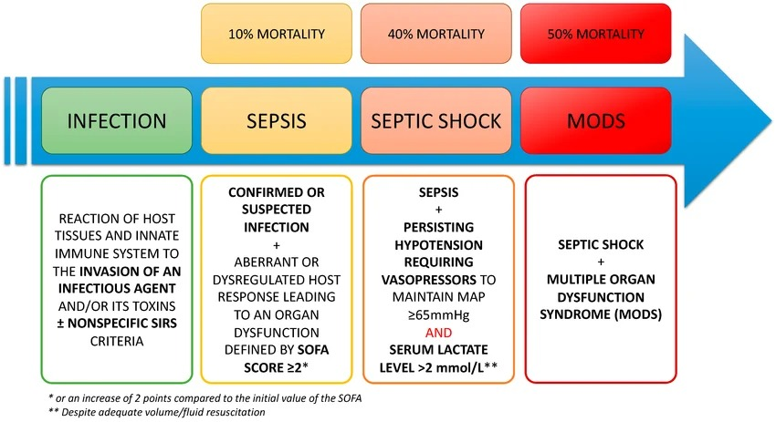
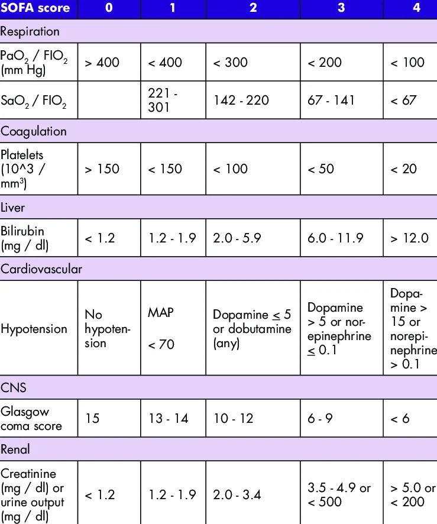
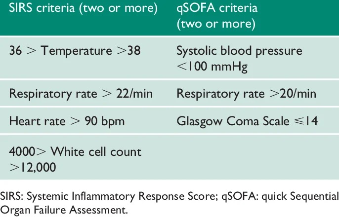
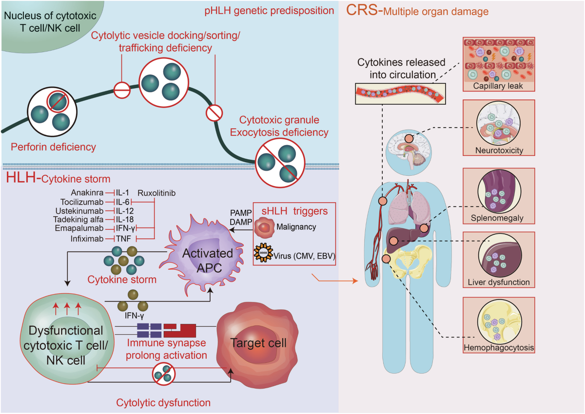
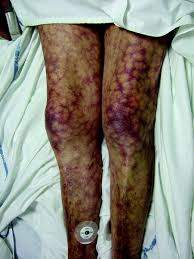
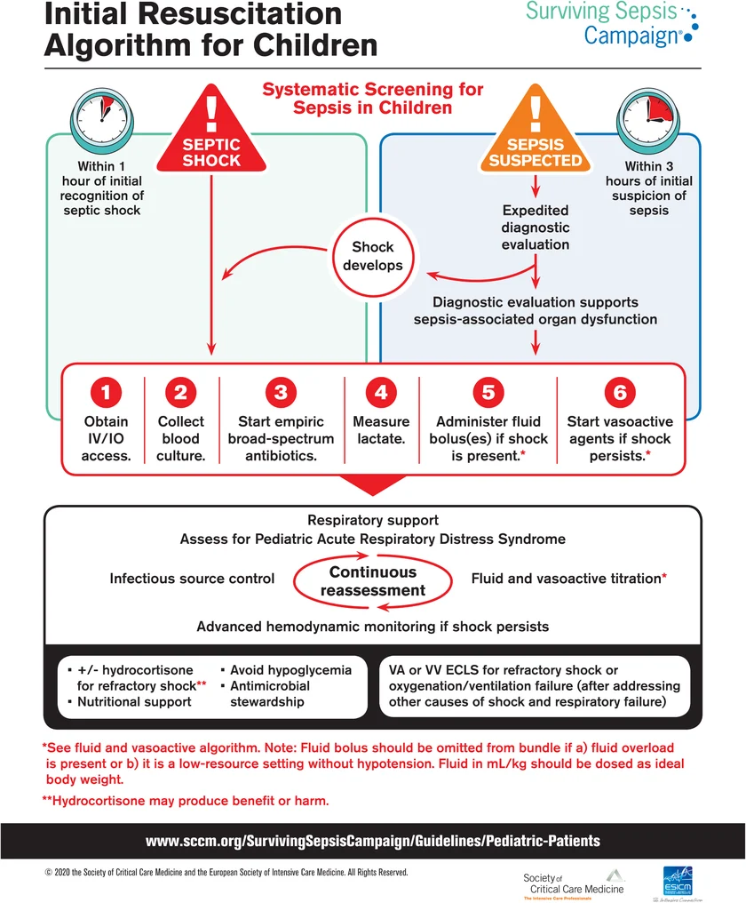

Sepsisul
Definiții Sepsis-3 · SOFA și qSOFA · Șocul septic · MODS · Tratamentul antimicrobian · Scorul Carmeli
În șocul septic, riscul de deces crește cu 7,6% cu fiecare oră de întârziere a tratamentului antimicrobian adecvat. Prima oră de la diagnostic — golden hour — este decisivă. Ca MF, nu vei trata sepsisul în cabinet, dar trebuie să-l recunoști RAPID: un pacient febril cu confuzie și hipotensiune nu e „o viroză mai rea" — este o urgență vitală. Incidența sepsisului este de ~436/100.000 locuitori, iar mortalitatea variază de la 10% (sepsis) la 50% (MODS). Cunoașterea criteriilor Sepsis-3 și a scorului qSOFA îți permite să triezi corect și să salvezi vieți.
Definiții — de la SIRS la Sepsis-3
Sepsisul este definit, conform consensului Sepsis-3 (2016), ca un răspuns disproporționat al gazdei la o infecție, cu instalarea unei disfuncții de organ cu risc vital. Elementul cheie este disfuncția de organ la distanță față de focarul infecțios inițial — nu orice infecție severă este sepsis. De exemplu, insuficiența respiratorie din pneumonie reprezintă o complicație locală a pneumoniei, nu sepsis; dar dacă aceeași pneumonie produce insuficiență renală prin hipoperfuzie, atunci avem sepsis.
Definiția anterioară (1991, revizuită 2001) presupunea doar existența unei infecții plus criterii SIRS (Systemic Inflammatory Response Syndrome): febră >38°C sau hipotermie <36°C, tahicardie >90/min, polipnee >20/min sau PaCO₂ <32 mmHg, leucocitoză >12.000/μL sau leucopenie <4.000/μL. Problema majoră: SIRS era excesiv de sensibil — aproape orice infecție bacteriană banală (o angină streptococică cu febră și leucocitoză) îndeplinea criteriile. Pe vechea definiție, „sepsisul sever" era cel cu disfuncție de organ, iar „șocul septic" era cel cu hipotensiune. Sepsis-3 a eliminat complet termenul de „sepsis sever" — sepsisul include obligatoriu disfuncția de organ.
Șocul septic constă în hipotensiune arterială refractară la echilibrarea hidrovolemică prin soluții cristaloide, necesitând vasopresoare pentru menținerea PAM ≥65 mmHg, asociată cu un nivel al lactatului seric >2 mmol/L în ciuda resuscitării volemice adecvate. Mortalitatea în șocul septic depășește 40%.
MODS (Multiple Organ Dysfunction Syndrome) și MSOF (Multisystem Organ Failure) reprezintă deteriorarea progresivă a homeostaziei, cu afectarea simultană a mai multor sisteme. Mortalitatea crește proporțional cu numărul de organe afectate, ajungând la ~50% sau mai mult.

Diagrama prezintă progresia de la infecție simplă (reacția imunitară înnăscută ± SIRS) la sepsis (infecție + disfuncție de organ, SOFA ≥2, mortalitate ~10%), apoi la șoc septic (hipotensiune refractară + lactat >2, mortalitate ~40%) și MODS (insuficiență multiorganică, mortalitate ~50%). Elementul critic de reținut: fiecare treaptă de escaladare implică un salt major de mortalitate, iar tranzițiile pot fi rapide — ore, nu zile. Recunoașterea precoce și intervenția în „golden hour" sunt decisive." data-sursa="https://www.researchgate.net/figure/Diagram-representing-the-continuum-between-infection-by-a-pathogen-and-the-occurrence-of_fig1_362773344">Diagrama prezintă progresia de la infecție simplă (reacția imunitară înnăscută ± SIRS) la sepsis (infecție + disfuncție de organ, SOFA ≥2, mortalitate ~10%), apoi la șoc septic (hipotensiune refractară + lactat >2, mortalitate ~40%) și MODS (insuficiență multiorganică, mortalitate ~50%)....
Diagrama prezintă progresia de la infecție simplă (reacția imunitară înnăscută ± SIRS) la sepsis (infecție + disfuncție de organ, SOFA ≥2, mortalitate ~10%), apoi la șoc septic (hipotensiune refractară + lactat >2, mortalitate ~40%) și MODS (insuficiență multiorganică, mortalitate ~50%). Elementul critic de reținut: fiecare treaptă de escaladare implică un salt major de mortalitate, iar tranzițiile pot fi rapide — ore, nu zile. Recunoașterea precoce și intervenția în „golden hour" sunt decisive.
SIRS era conceput ca un marker de alarmă, dar s-a dovedit prea sensibil și prea puțin specific. Într-un studiu pe pacienți din terapie intensivă, 1 din 8 pacienți cu infecție severă și disfuncție de organ NU îndeplineau criteriile SIRS — deci SIRS rateaza exact pacienții pe care vrei să-i prinzi. Invers, orice febră + tahicardie banală (post-chirurgicală, virală) bifează SIRS. Sepsis-3 mută focusul de la „răspunsul inflamator" la consecința lui — disfuncția de organ — care este ceea ce ucide pacientul.
B) GREȘIT — qSOFA evaluează: FR ≥22, TAs <100, GCS <15. Tahicardia și leucocitoza NU sunt parametri qSOFA. Aici qSOFA = 0.
D) GREȘIT — Pe Sepsis-3, sepsisul necesită disfuncție de organ la distanță (SOFA ≥2), nu doar semne inflamatorii. Febra + leucocitoza + tahicardia sunt răspunsuri normale la o infecție bacteriană localizată.
E) GREȘIT — Termenul „sepsis sever" nu mai există în nomenclatura Sepsis-3 (2016). A fost eliminat complet.
Scoruri de evaluare — SOFA și qSOFA
Scorul SOFA (Sequential Organ Failure Assessment) evaluează cantitativ disfuncția a 6 sisteme: respirator (PaO₂/FiO₂), coagulare (trombocite), hepatic (bilirubină), cardiovascular (hipotensiune/vasopresoare), neurologic (GCS) și renal (creatinină/diureză). Fiecare sistem primește un punctaj de 0-4. Pentru diagnosticul de sepsis este necesară agravarea scorului SOFA cu cel puțin 2 puncte față de evaluarea inițială. La pacienții fără comorbidități, scorul SOFA bazal se presupune a fi 0; un SOFA ≥2 indică un risc de mortalitate de ~10%.
SOFA este extrem de util în terapie intensivă, unde toate datele sunt disponibile. Dar în urgență sau la patul bolnavului, calcularea SOFA completă este adesea imposibilă (necesită PaO₂/FiO₂, bilirubină, trombocite). De aceea, Sepsis-3 a introdus qSOFA (quick SOFA) ca instrument de screening bedside.

Tabelul SOFA este referința standard pentru cuantificarea disfuncției de organ în sepsis. Aspectul practic esențial: nu e necesar să memorezi fiecare valoare — important este să știi CE sisteme evaluează (respirator, coagulare, hepatic, cardiovascular, SNC, renal) și că un SOFA ≥2 peste baseline definește sepsisul. În practică, calculatoarele online sau din aplicații fac treaba — rolul tău este să știi CÂND să-l aplici." data-sursa="https://www.researchgate.net/figure/SOFA-score-according-to-European-Society-of-Intensive-Care-Medicine-4_tbl1_365955382">Tabelul SOFA este referința standard pentru cuantificarea disfuncției de organ în sepsis. Aspectul practic esențial: nu e necesar să memorezi fiecare valoare — important este să știi CE sisteme evaluează (respirator, coagulare, hepatic, cardiovascular, SNC, renal) și că un SOFA ≥2 peste baseline definește sepsisul....
Tabelul SOFA este referința standard pentru cuantificarea disfuncției de organ în sepsis. Aspectul practic esențial: nu e necesar să memorezi fiecare valoare — important este să știi CE sisteme evaluează (respirator, coagulare, hepatic, cardiovascular, SNC, renal) și că un SOFA ≥2 peste baseline definește sepsisul. În practică, calculatoarele online sau din aplicații fac treaba — rolul tău este să știi CÂND să-l aplici.
qSOFA — un scor de screening bedside cu doar 3 criterii clinice, fără laborator:
1. Frecvență respiratorie ≥22 respirații/minut · 2. Tensiune arterială sistolică <100 mmHg · 3. Alterarea statusului mental (GCS <15). Un scor qSOFA ≥2 la un pacient cu infecție suspectată semnalează risc crescut de evoluție nefavorabilă și necesită evaluarea SOFA completă + considerarea transferului la terapie intensivă.

Acest tabel evidențiază diferența fundamentală între cele două sisteme de screening. SIRS necesită laborator (leucocite) și include parametri cu specificitate scăzută (tahicardie, febră). qSOFA folosește exclusiv parametri clinici bedside — poate fi evaluat în 30 de secunde, fără laborator. Capcana: qSOFA NU diagnostichează sepsisul — este un instrument de triaj care spune „evaluează mai departe"." data-sursa="https://www.researchgate.net/figure/Clinical-and-laboratory-parameters-used-for-SIRS-and-qSOFA-scoring_tbl1_333657668">Acest tabel evidențiază diferența fundamentală între cele două sisteme de screening. SIRS necesită laborator (leucocite) și include parametri cu specificitate scăzută (tahicardie, febră). qSOFA folosește exclusiv parametri clinici bedside — poate fi evaluat în 30 de secunde, fără laborator....
Acest tabel evidențiază diferența fundamentală între cele două sisteme de screening. SIRS necesită laborator (leucocite) și include parametri cu specificitate scăzută (tahicardie, febră). qSOFA folosește exclusiv parametri clinici bedside — poate fi evaluat în 30 de secunde, fără laborator. Capcana: qSOFA NU diagnostichează sepsisul — este un instrument de triaj care spune „evaluează mai departe".
SIRS (definiția veche)
- Criterii
- Necesită laborator
- Prag de alarmă
- Specificitate
- Rol actual
- Limită
qSOFA (Sepsis-3)
- 4 criterii (T°, AV, FR, leucocite) | 3 criterii (FR, TAs, GCS)
- Da (leucocite) | Nu — 100% clinic, bedside
- ≥2 criterii = SIRS pozitiv | ≥2 puncte = risc crescut
- Scăzută — orice infecție banală pozitivează | Mai bună — selectează pacienții cu disfuncție emergentă
- Abandonat ca criteriu de sepsis | Screening bedside → trigger pentru SOFA complet
- Nu diferențiază infecție banală de sepsis | Sensibilitate moderată — poate rata sepsis incipient
La prima vedere, GCS 14 pare „aproape normal" — pacientul e orientat dar ușor confuz. Dar tocmai această subtilitate face diferența: în contextul unei infecții, orice alterare a statusului mental (chiar și confuzie ușoară, dezorientare temporală, somnolență neobișnuită) sugerează hipoperfuzie cerebrală sau efect direct al citokinelor pe SNC. Pragul GCS <15 (nu <13 sau <12) reflectă principiul screening-ului: sensibilitate > specificitate — vrei să prinzi cât mai devreme, nu să confirmi tardiv.
B) GREȘIT — Tahicardia (AV >90) NU este criteriu qSOFA. qSOFA are doar 3 parametri: FR, TAs, GCS. Confuzia cu SIRS (care include tahicardia) este o eroare frecventă.
C) GREȘIT — GCS este 15 (normal), deci nu dă punct. qSOFA = 2, nu 3.
D) GREȘIT — FR 24 ≥22 (1 punct) și TAs 95 <100 (1 punct) sunt ambele pozitive.
Etiologie și patogenie — furtuna citokinică
Etiologia sepsisului este, prin definiție, infecțioasă — orice agent patogen poate fi implicat: bacterii (cel mai frecvent), fungi, virusuri, paraziți. Cel mai frecvent, sepsisul se dezvoltă pornind de la un focar infecțios respirator (pneumonie), urmat de cel intraabdominal (peritonită, colangită), urinar (pielonefrită, urosepsis), tegumentar (celulită, fascită necrozantă) și asociat cateterului intravenos.
Identificarea focarului primar și a porții de intrare este esențială deoarece ghidează alegerea tratamentului antimicrobian empiric și permite asanarea chirurgicală (drenajul abcesului, suprimarea cateterului infectat). Șansa de supraviețuire depinde direct de începerea terapiei adecvate în prima oră — de aceea identificarea promptă a focarului este prioritară.
Patogenia sepsisului nu constă în invazia microbiană per se, ci în răspunsul disproporționat al gazdei. Mecanismul central:
1. Infecția activează răspunsul proinflamator (TNF-α, IL-1, IL-12) — febră, leucocitoză, tahicardie 2. Compensator, se activează CARS (Compensatory Anti-Inflammatory Response Syndrome) — IL-4, IL-6, IL-10, IL-13 3. Dacă echilibrul se perturbă → „furtuna citokinică" (cytokine storm) — eliberare masivă de mediatori pro- și antiinflamatori 4. Paradoxal, predomină pareza imună — organismul devine vulnerabil la invazia microbiană accelerată 5. Toxinele bacteriene (lipopolizaharidele/LPS la Gram negativi, superantigenele la Gram pozitivi) amplifică răspunsul → vasoconstricție microcirculatorie viscerală → hipoperfuzie tisulară → disfuncție de organ la distanță
Sepsisul antrenează și modificări neuroendocrine: CIRCI (Critical Illness-Related Corticosteroid Insufficiency) prin epuizarea axei hipotalamo-hipofizo-suprarenale, hiperglicemie de stres și disfuncție tiroidiană.

- Diagrama ilustrează mecanismul furtunii citokinice pornind de la activarea celulelor prezentatoare de antigen (APC) de către PAMP/DAMP, cu eliberarea masivă de citokine proinflamatorii (TNF, IL-1, IL-6, IL-12, IFN-γ)
- Diagrama ilustrează mecanismul furtunii citokinice pornind de la activarea celulelor prezentatoare de antigen (APC) de către PAMP/DAMP, cu eliberarea masivă de citokine proinflamatorii (TNF, IL-1, IL-6, IL-12, IFN-γ)
- În stânga: celulele T citotoxice și NK devin disfuncționale, cu activarea prelungită a sinapsului imun și citoliză deficitară — paradoxul imunoparezei septice
- În dreapta: CRS (Cytokine Release Syndrome) cu afectare multiorganică — leak capilar, neurotoxicitate, splenomegalie, disfuncție hepatică, hemofagocitoză
- Terapiile biologice țintite (anakinra anti-IL-1, tocilizumab anti-IL-6, infliximab anti-TNF) sunt indicate în stânga — relevante în formele severe de HLH/MAS asociate sepsisului
Un pacient poate avea o bacteriemie masivă și să nu facă sepsis (dacă răspunsul imun este proporțional). Altul poate face sepsis de la o infecție urinară aparent banală (dacă răspunsul gazdei este disproporționat). De aceea, factorii de risc ai gazdei (vârstă, imunosupresie, comorbidități, splenectomie) sunt la fel de importanți ca virulența agentului patogen.
C) GREȘIT — Glomerulonefrita post-infecțioasă apare tipic la 1-3 săptămâni post-streptococic, nu în faza acută a sepsisului. Mecanismul sepsisului este diferit (hipoperfuzie, nu imun-complexe).
D) GREȘIT — Nefrotoxicitatea medicamentoasă este o cauză reală de insuficiență renală la pacienții cu sepsis, dar nu este mecanismul principal prin care infecția produce disfuncția. Aminoglicozidele sunt nefrotoxice, dar nu sunt prima linie în pneumonie.
E) GREȘIT — Abcesele renale hematogene sunt posibile dar rare și nu sunt mecanismul principal al disfuncției renale în sepsis. Sepsisul produce insuficiență renală prin hipoperfuzie, nu prin infecție directă renală.
Clinică și diagnostic — golden hour
Sepsisul nu prezintă un tablou clinic patognomonic. Manifestările sunt dominate de procesul infecțios inițial (tuse în pneumonie, durere abdominală în peritonită, disurie în urosepsis), la care se adaugă semne de răspuns sistemic și, critic, semne de disfuncție de organ la distanță.
Semne care trebuie să declanșeze alerta: - Neurologice: confuzie, agitație, obnubilare, dezorientare — orice alterare a statusului mental la un pacient febril este un red flag major - Hemodinamice: hipotensiune (TAs <100 mmHg), tahicardie, timp de reumplere capilară >3 secunde, extremități reci și marmorate - Respiratorii: polipnee >22/min, SpO₂ scăzută, necesar de oxigen suplimentar - Renale: oligurie (<0,5 mL/kg/h), creșterea creatininei - Cutanate: petșii (sugestive pentru CID), marmorare, cianoza extremităților
La vârstnici, tabloul poate fi atipic: lipsa febrei (hipotermie paradoxală), absența tahicardiei (betablocante), confuzia poate fi atribuită greșit „demenței". La copii, polipneea și tahicardia sunt răspunsuri obișnuite la orice infecție — specificitatea scade.

- Fotografia clinică prezintă ambele membre inferioare cu leziuni purpurice extinse, confluente, cu aspect violaceu-necrotic — tablou clasic de purpură fulminantă în context de coagulare intravasculară diseminată (CID) asociată șocului septic
- Fotografia clinică prezintă ambele membre inferioare cu leziuni purpurice extinse, confluente, cu aspect violaceu-necrotic — tablou clasic de purpură fulminantă în context de coagulare intravasculară diseminată (CID) asociată șocului septic
- Distribuția este bilaterală, simetrică, cu predominanță pe coapse și gambe, sugerând tromboză microvasculară difuză și necroză cutanată secundară hipoperfuziei
- Purpura fulminantă este un semn tardiv și de prognostic extrem de rezervat — apariția ei indică CID avansat cu consum de factori de coagulare și trombocitopenie severă
- Diferențierea de livedo reticularis (aspect marmorat, reversibil) și de mottling (marmorare a genunchilor, semn precoce de hipoperfuzie): purpura fulminantă este fixă, palpabilă și nu pălește la digitopresiune
Algoritmul diagnostic:
1. Suspiciune clinică (febră + semne de organ) → 2. Calculează qSOFA bedside → 3. Dacă qSOFA ≥2: evaluare SOFA completă + recoltare hemocultură (3 seturi, locuri diferite) → 4. Antibioterapie empirică i.v. ÎN PRIMA ORĂ (nu aștepta rezultatele!) → 5. Identificare focar infecțios (imagistică, probe) → 6. Lactat seric (>2 mmol/L = hipoperfuzie) → 7. Reevaluare la 72h: dezescaladare conform antibiogramei.
Investigații esențiale:
Investigații în sepsis — ce recoltezi și de ce
| Investigație | Ce arată | Când o faci |
|---|---|---|
| 3 seturi hemocultură (locuri diferite) | Identificare agent + antibiogramă | ÎNAINTE de antibiotic, în puseu febril |
| Lactat seric | Hipoperfuzie tisulară (>2 mmol/L = șoc septic) | La prezentare + serial (la 2-4h) |
| Hemogramă completă + formulă | Leucocitoză/leucopenie, trombocitopenie (CID) | La prezentare |
| PCR, procalcitonină | Biomarkeri inflamatori; PCT utilă la dezescaladare | La prezentare + la 72h |
| Profil renal (uree, creatinină, ionogramă) | Disfuncție renală (SOFA) | La prezentare |
| Profil hepatic (bilirubină, TGO, TGP) | Disfuncție hepatică (SOFA) | La prezentare |
| Gazometrie arterială + PaO₂/FiO₂ | Disfuncție respiratorie (SOFA) | La prezentare |
| Coagulare (TP, APTT, fibrinogen, PDF) | CID | La prezentare |
| Imagistică ghidată de clinică | Identificare focar (Rx torace, echo, CT) | Ghidată de examen clinic |
B) GREȘIT — Ecografia este utilă pentru a confirma colangita, dar la un pacient cu qSOFA = 3 și hipotensiune, antibioticul este prioritar.
C) GREȘIT — Puncția de ascită este importantă dacă suspectezi PBS, dar nu este prioritară față de antibioterapie la un pacient instabil hemodinamic.
E) GREȘIT — Drenajul biliar poate fi necesar (colangita ascendentă), dar se face DUPĂ stabilizarea cu antibiotic + fluide. Un pacient instabil pe masa de operație are mortalitate mult mai mare.
Diagnostic diferențial — SIRS noninfecțios
Diagnosticul diferențial al sepsisului presupune în primul rând diferențierea SIRS-ului infecțios de cel non-infecțios. SIRS poate apărea și secundar unui politraumatism, arsurilor extinse, pancreatitei acute sau hemoragiei masive — fără implicarea unui agent infecțios. În aceste situații, reechilibrarea pacientului este prioritară, fără necesitatea antibioterapiei (în absența unei infecții supraadăugate dovedite).
Al doilea nivel de diagnostic diferențial este identificarea tipului de șoc: șocul septic (vasodilatator, „cald" inițial) trebuie diferențiat de șocul cardiogen (congestie pulmonară, galop), hipovolemic (hemoragie, deshidratare), anafilactic (urticarie, angioedem, expunere la alergen) și neurogen (bradicardie paradoxală, traumatism spinal).
Șoc septic
- Mecanism
- Extremități
- Puls
- Jugulare
- Auscultație pulmonară
- Presiune venoasă centrală
- Primul pas terapeutic
Șoc cardiogen
- Vasodilatație + hipoperfuzie din cascada citokinică | Pompă cardiacă deficitară (infarct, insuficiență)
- Calde inițial („warm shock"), apoi reci | Reci și cianotice de la debut
- Tahicardic, bounding inițial | Tahicardic, filiform
- Plate (hipovolemie relativă) | Turgescente (congestie)
- Frecvent normală inițial | Raluri de stază bilaterale
- Scăzută inițial | Crescută
- Fluide cristaloide 30 mL/kg + antibiotic | Diuretice + ionotrope + revascularizare
Complicații și evoluție — de la MODS la sindromul post-sepsis
Prin definiție, sepsisul este o complicație a procesului infecțios. Evoluția nefavorabilă presupune extinderea disfuncției la mai multe sisteme, cu instalarea MODS. O meta-analiză a ierarhizat ordinea afectării: sistemul vascular (hipotensiune) este printre primele afectate, urmat de cel renal (oligurie, retenție azotată), SNC (confuzie, obnubilare, encefalopatie), respirator (insuficiență respiratorie, ARDS), hematologic (anemie, trombocitopenie, CID) și hepatic (coagulopatie, icter).
Un aspect important și relativ recent descris este sindromul post-sepsis — un set complex de simptome care apare la 6-18 luni după episodul acut. Acesta include:
- Risc crescut de reinfecție — prin alterarea microbiomului și anergie limfocitară reziduală
- Risc cardiovascular crescut — ateroscleroză accelerată prin status proinflamator rezidual, mai ales în primul an
- Deficite cognitive — dificultăți de concentrare, citire/scriere, oboseală cronică, tulburări de somn, anxietate, depresie — explicate prin inflamație reziduală la nivel SNC
Vestea bună: disfuncția de organ din sepsis are predominant substrat biochimic, nu anatomic — este reversibilă dacă procesul infecțios este controlat. Majoritatea pacienților raportează ameliorare în 24 de luni.
Tratament — golden hour și scorul Carmeli
Tratamentul sepsisului combină componente etiologice (antimicrobiene), patogenice (controlul sursei), de susținere (resuscitare volemică, vasopresoare) și de monitorizare (reevaluare continuă). Principiul cardinal: timpul este viață.
Principiile golden hour:
1. Recoltează hemocultură (3 seturi, locuri diferite) — dar NU întârzia antibioticul mai mult de câteva minute 2. Antibioterapie empirică i.v. cu spectru larg — în prima oră de la diagnostic 3. Resuscitare volemică — cristaloide 30 mL/kg în primele 3 ore (la hipotensiune sau lactat >4) 4. Vasopresoare (norepinefrină prima linie) dacă PAM <65 mmHg post-resuscitare volemică 5. Identificare și asanare focar — drenaj abces, suprimare cateter infectat, chirurgie dacă necesar
Scorul Carmeli — ghidează alegerea empirică a antibioticului în funcție de riscul de rezistență:
Scorul Carmeli — alegerea antibioterapiei empirice
| Scor Carmeli | Profil | Antibiotice de primă linie |
|---|---|---|
| Carmeli 1 (comunitar) | Germeni cu susceptibilitate normală | Amoxicilină-clavulanat, cefalosporine gen. II-III, fluorochinolone, macrolide |
| Carmeli 2 (asociat îngrijirilor) | Potențial rezistenți | Cefalosporine gen. III-IV, ertapenem, fluorochinolone i.v., ± vancomicină/linezolid (anti-MRSA) |
| Carmeli 3 (nosocomial) | Potențial multirezistenți | Imipenem/meropenem, ± colistin (anti-Pseudomonas), ± vancomicină/linezolid (anti-MRSA) |
Scorul Carmeli se calculează pe baza a 3 criterii: (A) contactul cu sectorul sanitar în ultimele 6 luni (1-3 puncte), (B) tratament antimicrobian recent (1-2 puncte), (C) caracteristicile pacientului — vârstă/comorbidități/imunosupresie (1-3 puncte). Se ia valoarea cea mai mare din cele 3 categorii. Un pacient tânăr, fără contact sanitar și fără antibiotice recente = Carmeli 1. Un pacient cu internări repetate, antibiotice multiple și imunosupresie = Carmeli 3.
Dezescaladarea la 72h este critică: după identificarea agentului și a antibiogramei, se trece de la spectru larg la tratament țintit — aceeași eficacitate cu presiune de selecție redusă. Tratamentul antimicrobian se reevaluează zilnic, iar disfuncția de organ se evaluează la fiecare oră în faza acută.

Algoritmul sintetizează pașii esențiali ai „hour-1 bundle" din Surviving Sepsis Campaign: screening sistematic → recunoașterea șocului → antibioterapie empirică + hemocultură → resuscitare volemică → evaluarea disfuncției de organ. Aspectul practic de reținut: ordinea este critică — antibioticul și fluidele nu se amână pentru imagistică sau investigații suplimentare. Nota importantă: această versiune a algoritmului este cea pediatrică, dar principiile sunt identice la adult — singurele diferențe sunt dozele de fluide (mai agresive raportat la greutate la copii) și pragurile tensionale." data-sursa="https://www.researchgate.net/figure/Surviving-Sepsis-Campaign-algorithm-for-the-initial-resuscitation-of-children-with_fig1_342676646">Algoritmul sintetizează pașii esențiali ai „hour-1 bundle" din Surviving Sepsis Campaign: screening sistematic → recunoașterea șocului → antibioterapie empirică + hemocultură → resuscitare volemică → evaluarea disfuncției de organ....
Algoritmul sintetizează pașii esențiali ai „hour-1 bundle" din Surviving Sepsis Campaign: screening sistematic → recunoașterea șocului → antibioterapie empirică + hemocultură → resuscitare volemică → evaluarea disfuncției de organ. Aspectul practic de reținut: ordinea este critică — antibioticul și fluidele nu se amână pentru imagistică sau investigații suplimentare. Nota importantă: această versiune a algoritmului este cea pediatrică, dar principiile sunt identice la adult — singurele diferențe sunt dozele de fluide (mai agresive raportat la greutate la copii) și pragurile tensionale.
Ghidurile inițiale Surviving Sepsis Campaign (2004) recomandau „bundle-uri de 6 ore". Dar studii ulterioare au arătat că prima oră este decisivă: mortalitatea crește cu 7,6% cu fiecare oră de întârziere a antibioticului adecvat după instalarea hipotensiunii. Ghidurile actuale (2021) recomandă explicit: antibioterapie i.v. în prima oră de la recunoașterea sepsisului. Aceasta nu înseamnă „cât mai repede posibil" — înseamnă 60 de minute, cronometrate.
Verificare cunoștințe
Tahicardia sinusală izolată la un pacient febril cu extremități calde și TA normală este un răspuns fiziologic proporțional — qSOFA = 0, nu sugerează disfuncție de organ. Polipneea cu desaturare indică suferință respiratorie și dă un punct qSOFA — e mai grav, dar fără disfuncție de alt organ. Confuzia + oliguria la un pacient hipotens semnalează disfuncție multiorganică (SNC + renal + cardiovascular) — qSOFA = 3, prognostic sever. Hipotensiunea refractară la vasopresoare cu lactat >4 și anurie definește șocul septic refractar cu MODS — mortalitate >60%.
Infecție + disfuncție de organ la distanță (agravare SOFA ≥2 peste baseline). Nu mai e suficient SIRS.
FR ≥22/min · TAs <100 mmHg · GCS <15 (alterare status mental). Exclusiv clinice, fără laborator. qSOFA ≥2 = risc crescut.
Sepsis + hipotensiune refractară la cristaloide (necesită vasopresoare pentru PAM ≥65) + lactat >2 mmol/L. Mortalitate >40%.
Prima oră de la diagnosticul sepsisului. Mortalitatea crește cu 7,6% cu fiecare oră de întârziere a antibioterapiei adecvate. Hemocultură + antibiotic i.v. = urgent.
Evaluează riscul de rezistență la antibiotice: Carmeli 1 = comunitar (betalactamine), Carmeli 2 = asociat îngrijirilor (cefalosporine III-IV, ertapenem), Carmeli 3 = nosocomial (carbapeneme ± colistin).
Simptome la 6-18 luni post-sepsis: deficite cognitive, oboseală, risc cardiovascular crescut, risc de reinfecție. Cauze: inflamație reziduală SNC + anergie limfocitară + ateroscleroză accelerată.
Pensionarul cu pneumonie care „se agravează"
Domnul Gheorghe, 71 de ani, pensionar, este adus de familie la cabinetul MF cu febră de 3 zile, tuse productivă cu spută ruginie, dispnee progresivă. Familia menționează că „de ieri vorbește incoerent și nu mai mănâncă". Antecedente: diabet zaharat tip 2 (Metformin 1000 mg x2/zi), HTA (Ramipril 10 mg), BPOC stadiul II, fost fumător (30 pachete-an). Ultima internare: acum 4 luni pentru exacerbare BPOC (Carmeli 2).
Examen fizic la cabinet: pacient confuz, dezorientat temporospatial, tahipneic. Semne vitale: T° 39,8°C, TA 90/55 mmHg, AV 118/min, FR 28/min, SpO₂ 89% în aer atmosferic, GCS 13 (E3V4M6). Tegumente calde, timp de reumplere capilară 4 secunde.
C) GREȘIT — Febra NU este criteriu qSOFA. qSOFA = FR, TAs, GCS — fără temperatură.
D) GREȘIT — FR 28 ≥22 (1 punct), TAs 90 <100 (1 punct), GCS 13 <15 (1 punct). Sunt 3 criterii, nu 1.
E) GREȘIT — Tahicardia NU este criteriu qSOFA (e criteriu SIRS). TAs <100 este criteriu qSOFA, dar sunt 3 criterii pozitive, nu 2.
Pacientul ajunge la urgență în 25 de minute. Se recoltează hemocultură (3 seturi) și se inițiază resuscitare volemică cu NaCl 0,9% 30 mL/kg. Rezultate inițiale: Leucocite 18.500/μL (85% neutrofile), Hb 11,2 g/dL, Trombocite 95.000/μL, Creatinină 2,4 mg/dL (baseline 1,1), Bilirubină totală 2,8 mg/dL, PCR 285 mg/L, Procalcitonină 12 ng/mL, Lactat 4,2 mmol/L. Rx torace: infiltrat bazal drept cu bronhogramă aerică.
C) GREȘIT — Amoxicilină-clavulanat este Carmeli 1 (comunitar pur). Pacientul are factori de risc pentru germeni rezistenți (internare recentă = Carmeli 2).
D) GREȘIT — Carmeli 3 se aplică la pacienți cu infecții nosocomiale, contact repetat cu proceduri invazive. Pacientul are o singură internare acum 4 luni — Carmeli 2, nu 3.
E) GREȘIT — Așteptarea hemoculturii este cea mai gravă greșeală posibilă. Cu lactat 4,2 mmol/L și qSOFA = 3, fiecare oră de întârziere crește mortalitatea cu 7,6%.
După 2L cristaloide, TA = 75/45 mmHg, PAM = 55 mmHg. Se inițiază norepinefrină. Lactat de control: 5,1 mmol/L (crescut). Diureza ultimelor 3 ore: 40 mL. GCS 12.
B) GREȘIT — SIRS nu mai este un termen relevant în Sepsis-3. Și mai multe fluide fără vasopresoare la PAM 55 pot fi periculoase (edem pulmonar).
D) GREȘIT — Oliguria este o manifestare a MODS din sepsis (hipoperfuzie renală), nu o patologie izolată. Este un semn de gravitate, nu diagnosticul principal.
E) GREȘIT — Lactat în creștere (4,2 → 5,1) + hipotensiune persistentă post-fluide NU reprezintă evoluție favorabilă.
Hemocultura pozitivă: Streptococcus pneumoniae sensibil la penicilină, cefalosporine, macrolide. Pacientul se stabilizează sub norepinefrină (în doze descrescătoare), creatinina începe să scadă, GCS revine la 15.
C) GREȘIT — Oprirea antibioticelor este prematură. Pneumonia pneumococică cu bacteriemie necesită minimum 7-10 zile de tratament.
D) GREȘIT — Switch-ul la oral este prematur la un pacient care încă e pe vasopresoare (chiar în doze descrescătoare). Calea i.v. rămâne indicată până la stabilizare completă.
E) GREȘIT — Continuarea terapiei cu spectru larg 14 zile crește presiunea de selecție și riscul de suprainfecție (Clostridioides difficile, candidoze). Dezescaladarea la 72h este obligatorie conform Surviving Sepsis Campaign.
Diagnostic final: Pneumonie comunitară dreaptă pneumococică complicată cu sepsis și șoc septic. - qSOFA bedside = instrumentul care a declanșat alerta la cabinet (3/3 = transfer imediat) - Golden hour respectat: hemocultură + antibioterapie empirică în prima oră la urgență - Scorul Carmeli 2 a ghidat alegerea antibioterapiei empirice (contact sanitar recent) - Șocul septic = hipotensiune refractară + lactat >2 → norepinefrină - Dezescaladarea la 72h = de la spectru larg la Ceftriaxonă (pe antibiogramă) — cei 4D respectați - Rolul MF: recunoaștere rapidă (qSOFA) + transfer fără întârziere = viață salvată